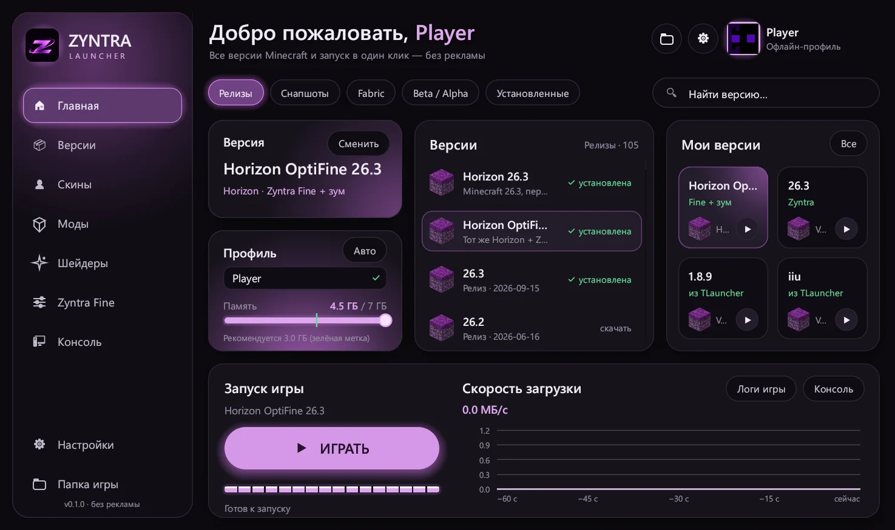
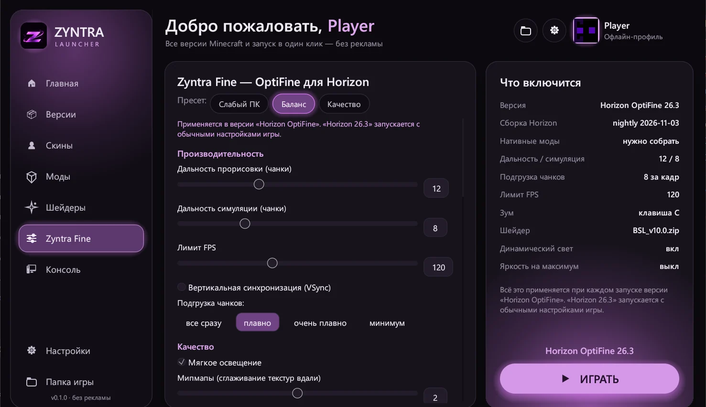
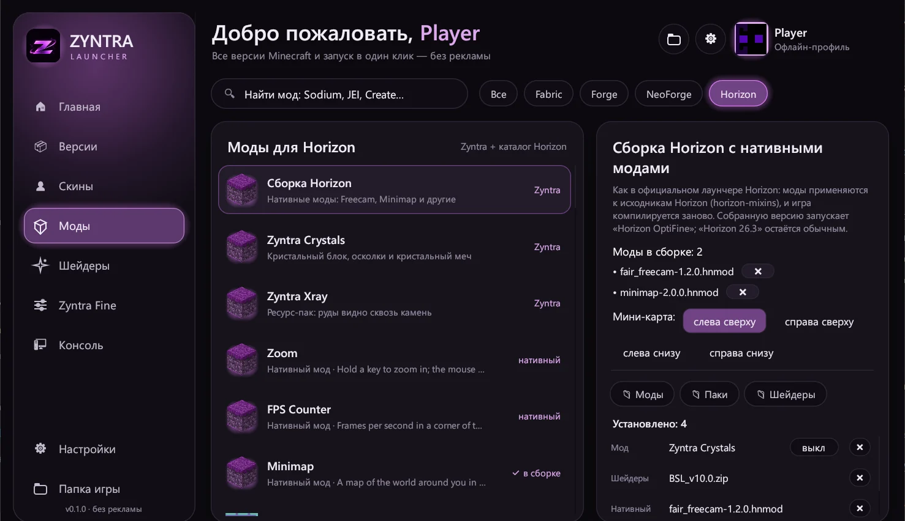

Лаунчер Minecraft, который просто работает
Все версии Minecraft, игра без аккаунта Microsoft, моды, шейдеры и скины в одном лёгком приложении на Rust.
Исходный код на GitHub

Всё нужное — ничего лишнего
Никакой рекламы, баннеров и лишних окон. Выбрал версию, нажал «Играть».
Все версии
Релизы, снапшоты, Beta и Alpha, Fabric. Видит версии из TLauncher — Forge, OptiFine и другие.
Без аккаунта
Играй с любым ником — регистрация в Microsoft не нужна.
Память сама
Лаунчер определяет объём ОЗУ и выделяет игре оптимально. Можно подкрутить ползунком.
Скины в 3D
Загрузи PNG и покрути модель. Скин виден в игре в любой версии.
Моды и шейдеры
Каталог Modrinth прямо в лаунчере: поиск, установка в один клик, зависимости ставятся сами.
Лёгкий и быстрый
Написан на Rust: 6 МБ, мгновенный запуск. Прячется во время игры и возвращается после.
Horizon OptiFine
Horizon — Minecraft 26.3, переписанный на Rust. Быстро запускается и летает даже на слабых ПК. Zyntra добавляет к нему:
- Zyntra Fine — настройки графики в стиле OptiFine с пресетами
- Зум по клавише и динамический свет от факела в руке
- Шейдеры OptiFine/Iris, например BSL
- Нативные моды: Freecam, мини-карта и другие
- Мод Zyntra Crystals: кристальный блок, осколки и меч

Как это выглядит
Тёмная тема, крупные кнопки, всё на одном экране.

Скачать Zyntra Launcher
Всегда последняя версия. Установка занимает полминуты.
Windows 10 и 11
- Скачай установщик.
- Запусти его и нажми «Установить» — права администратора не нужны.
- Если появится «Система Windows защитила ваш компьютер» — «Подробнее» → «Выполнить в любом случае».
Mac M1, M2, M3, M4
- Скачай .dmg и открой его.
- Перетащи Zyntra Launcher в папку «Программы».
- Первый запуск: правый клик → «Открыть». На macOS 15: «Системные настройки» → «Конфиденциальность и безопасность» → «Всё равно открыть».
Все версии и история изменений — на странице релизов.
Вопросы
Это бесплатно?
Да, полностью. Без рекламы, подписок и платных функций. Исходный код опубликован на GitHub.
Нужен ли лицензионный Minecraft?
Нет, можно играть с любым ником в офлайн-профиле. На серверах с проверкой лицензии такой профиль не пустят — для обычных серверов и одиночной игры подходит.
Почему Windows или Mac предупреждают при первом запуске?
У лаунчера нет платной цифровой подписи Microsoft и Apple, поэтому система не знает разработчика. Лаунчер безопасен: разреши запуск один раз, и дальше он открывается как обычная программа.
Подхватит ли мои версии из TLauncher?
Да. Zyntra видит версии и сборки из папки TLauncher и запускает их со всеми модами.
Что такое Horizon?
Неофициальный проект, который переписал Minecraft Java Edition 26.3 на Rust. Он заметно быстрее на слабом железе. Zyntra скачивает его сам и добавляет OptiFine-настройки, зум и моды.
Работает ли на Intel-Mac или Linux?
Пока сборка для Mac только для Apple Silicon (M1 и новее). Версии для Intel-Mac и Linux — в планах.
Больше ответов — в гайдах: Windows защитила компьютер, сколько памяти выделять, как поставить скин.